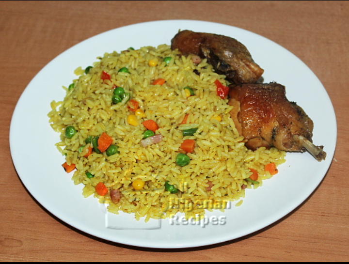

Fried Rice

Description
Wash your protein thoroughly with salt and water
boil with salt and seasoning allow to cook till tender
Dice your carrot,spring onion,runner beans,green pepper,red pepper,tatashe and set aside
Ingredient
- Long grain rice
- Vegetable oil
- Curry and Thyme
- Margarine
- Carrot
- Green pepper
- Runner beans
- Spring onion
- Liver
- Sweet corn
- Farrow
- Onion
- Fried rice spice
- Seasoning
- Red kidney
- Maggi
- Salt
- Chicken or beef stock
- Tatashe
- Protein(optional)
Steps:
- Place your pot on the fire,add Vegetable oil based on the quantity of your rice.Add diced onion,curry,little thyme,stur together and pour water immediately based on the quantity of your Rice
make sure the curry did not get burnt before adding the water
- In your curry and thyme water,add seasoning,stock water,fried rice spice,maggi,salt to taste,stir together thoroughly,make sure it is tasty,cover and allow to boil
- Wash your rice with salt and water,drain out with sieve then pour into the stock on fire,stir together thoroughly and allow to cook.
Make sure the water is completely dry just for the fried rice to stand one-one
- Place another pot on the fire,add groundnut oil based on the quantity of the vegetable,add diced onoin,all the vegetable,seasoning,maggi and salt to taste,
stir together and allow to fry,make sure it is tasty and the vegetable is not overcooked,pour into a sieve and set aside
- Open all the can things,rinse with water,pour into a sieve,the set aside.
- Place your frying on the fire,add little vegetable oil,make sure is on a low heat,add some portion of your can things,fried vegetable,rice and fry.
Carefully stir together and allow to steam